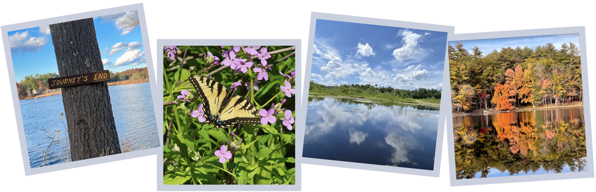

<div id="homepage">


    <main class="container-fluid">

        <header>
            <div>
                <h1>Photo Competition - Ended on Nov 15, 2024</h1>
            </div>
        </header>

        <section class="row gray-row">
            <div class="col-xs-12">
                <div>
                    
                    <h2>Andover’s Treasure: A Visual Journey of AVIS</h2><br />
                    <p>
                    <h3>Runs between June 20 and November 15, 2024.<br />AVIS seeks submissions
                        for
                        our first Photo Competition</h3><br />

                    <br /><br />

                    <b>Who Should Enter?</b><br />
                    The AVIS Andover’s Treasure: A Visual Journey of AVIS photo contest is open to photographers of
                    all skill levels and ages. You need not be an Andover resident to enter. Submissions from
                    current
                    AVIS Trustees will not be accepted.<br /><br />

                    <b>What to Enter?</b><br />
                    For 130 years, generations of AVIS volunteers have worked to preserve land, protect native
                    habitat, and provide opportunities for the public to experience and enjoy nature. Andover is
                    fortunate to have such a treasure of open space, and we are seeking digital photographs that capture
                    the essence of our AVIS properties, iconic sites, and landscapes. In order to qualify, photographs
                    must be taken within an AVIS reservation. For a list of our reservations go to this <a
                        href="/reservations.html">page</a>.<br /><br />

                    <b>What does AVIS mean to you?</b><br />
                    Each entrant may enter a maximum of 3 photographs (separately submitted). Your entries must have
                    been photographed on or after January 1, 2019. Please respect all rules posted on AVIS
                    reservations,
                    and please stay on the trails. </p>

                </div>

                <div>
                    <a href="/competitions/2024-photo/rules.html" class="btn btn-primary">View Photo Competition
                        Rules</a>
                </div>
            </div>


        </section>


    </main>
</div>